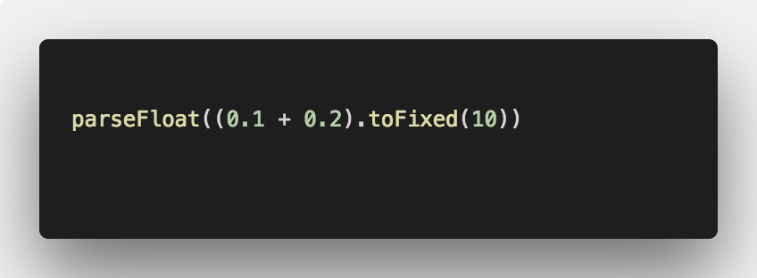
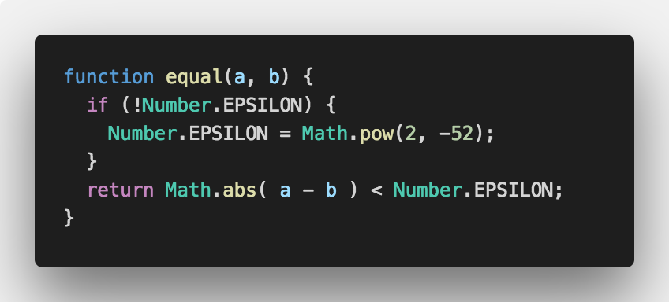

<!doctype html>


  


<html class="theme-next mist use-motion" lang="zh-Hans">
<head>
  <meta charset="UTF-8"/>
<meta http-equiv="X-UA-Compatible" content="IE=edge" />
<meta name="viewport" content="width=device-width, initial-scale=1, maximum-scale=1"/>


<meta http-equiv="Cache-Control" content="no-transform" />
<meta http-equiv="Cache-Control" content="no-siteapp" />


  
  
  <link href="/lib/fancybox/source/jquery.fancybox.css?v=2.1.5" rel="stylesheet" type="text/css" />


  
  
  
  

  
    
    
  

  

  

  

  

  
    
    
    <link href="//fonts.googleapis.com/css?family=Lato:300,300italic,400,400italic,700,700italic&subset=latin,latin-ext" rel="stylesheet" type="text/css">
  


<link href="/lib/font-awesome/css/font-awesome.min.css?v=4.6.2" rel="stylesheet" type="text/css" />

<link href="/css/main.css?v=5.1.0" rel="stylesheet" type="text/css" />


  <meta name="keywords" content="前端分享," />


  <link rel="shortcut icon" type="image/x-icon" href="/favicon.ico?v=5.1.0" />


<meta name="description" content="CSS伪元素和伪类1. 常见的伪元素和伪类 常见的伪类  :focus :hover :active :visited :link :first-child :lang   常见的伪元素(伪对象)  :before :after :first-letter :first-line ::placeholder  2. 伪类CSS3中对伪类的定义：  伪类存在的意义是为了通过选择器找到那些不存在与D">
<meta name="keywords" content="前端分享">
<meta property="og:type" content="article">
<meta property="og:title" content="前端分享">
<meta property="og:url" content="https://pajk-fe.github.io/2018/05/08/前端分享/index.html">
<meta property="og:site_name" content="PAJK-FE BLOG">
<meta property="og:description" content="CSS伪元素和伪类1. 常见的伪元素和伪类 常见的伪类  :focus :hover :active :visited :link :first-child :lang   常见的伪元素(伪对象)  :before :after :first-letter :first-line ::placeholder  2. 伪类CSS3中对伪类的定义：  伪类存在的意义是为了通过选择器找到那些不存在与D">
<meta property="og:locale" content="zh-Hans">
<meta property="og:image" content="https://pajk-fe.github.io/2018/05/08/前端分享/code_1.png">
<meta property="og:image" content="https://pajk-fe.github.io/2018/05/08/前端分享/code_2.png">
<meta property="og:updated_time" content="2018-06-29T08:01:26.908Z">
<meta name="twitter:card" content="summary">
<meta name="twitter:title" content="前端分享">
<meta name="twitter:description" content="CSS伪元素和伪类1. 常见的伪元素和伪类 常见的伪类  :focus :hover :active :visited :link :first-child :lang   常见的伪元素(伪对象)  :before :after :first-letter :first-line ::placeholder  2. 伪类CSS3中对伪类的定义：  伪类存在的意义是为了通过选择器找到那些不存在与D">
<meta name="twitter:image" content="https://pajk-fe.github.io/2018/05/08/前端分享/code_1.png">


<script type="text/javascript" id="hexo.configurations">
  var NexT = window.NexT || {};
  var CONFIG = {
    root: '/',
    scheme: 'Mist',
    sidebar: {"position":"left","display":"post","offset":12,"offset_float":0,"b2t":false,"scrollpercent":false},
    fancybox: true,
    motion: true,
    duoshuo: {
      userId: '0',
      author: '博主'
    },
    algolia: {
      applicationID: 'H3PXN7RGPT',
      apiKey: 'de272b1fc94c835c20b7de67668fa4ea',
      indexName: 'PAJK-FE',
      hits: {"per_page":10},
      labels: {"input_placeholder":"Search for Posts","hits_empty":"We didn't find any results for the search: ${query}","hits_stats":"${hits} results found in ${time} ms"}
    }
  };
</script>


  <link rel="canonical" href="https://pajk-fe.github.io/2018/05/08/前端分享/"/>


  <title> 前端分享 | PAJK-FE BLOG </title>
</head>

<body itemscope itemtype="http://schema.org/WebPage" lang="zh-Hans">

  


<script>
  (function(i,s,o,g,r,a,m){i['GoogleAnalyticsObject']=r;i[r]=i[r]||function(){
            (i[r].q=i[r].q||[]).push(arguments)},i[r].l=1*new Date();a=s.createElement(o),
          m=s.getElementsByTagName(o)[0];a.async=1;a.src=g;m.parentNode.insertBefore(a,m)
  })(window,document,'script','https://www.google-analytics.com/analytics.js','ga');
  ga('create', 'UA-73365165-2', 'auto');
  ga('send', 'pageview');
</script>


  
  
    
  

  <div class="container sidebar-position-left page-post-detail ">
    <div class="headband"></div>

    <header id="header" class="header" itemscope itemtype="http://schema.org/WPHeader">
      <div class="header-inner"><div class="site-brand-wrapper">
  <div class="site-meta ">
    

    <div class="custom-logo-site-title">
      <a href="/"  class="brand" rel="start">
        <span class="logo-line-before"><i></i></span>
        <span class="site-title">PAJK-FE BLOG</span>
        <span class="logo-line-after"><i></i></span>
      </a>
    </div>
      
        <p class="site-subtitle">我是副标题</p>
      
  </div>

  <div class="site-nav-toggle">
    <button>
      <span class="btn-bar"></span>
      <span class="btn-bar"></span>
      <span class="btn-bar"></span>
    </button>
  </div>
</div>

<nav class="site-nav">
  

  
    <ul id="menu" class="menu">
      
        
        <li class="menu-item menu-item-home">
          <a href="/" rel="section">
            
              <i class="menu-item-icon fa fa-fw fa-home"></i> <br />
            
            首页
          </a>
        </li>
      
        
        <li class="menu-item menu-item-categories">
          <a href="/categories" rel="section">
            
              <i class="menu-item-icon fa fa-fw fa-th"></i> <br />
            
            分类
          </a>
        </li>
      
        
        <li class="menu-item menu-item-about">
          <a href="/about" rel="section">
            
              <i class="menu-item-icon fa fa-fw fa-user"></i> <br />
            
            关于
          </a>
        </li>
      
        
        <li class="menu-item menu-item-archives">
          <a href="/archives" rel="section">
            
              <i class="menu-item-icon fa fa-fw fa-archive"></i> <br />
            
            归档
          </a>
        </li>
      
        
        <li class="menu-item menu-item-tags">
          <a href="/tags" rel="section">
            
              <i class="menu-item-icon fa fa-fw fa-tags"></i> <br />
            
            标签
          </a>
        </li>
      

      
        <li class="menu-item menu-item-search">
          
            <a href="javascript:;" class="popup-trigger">
          
            
              <i class="menu-item-icon fa fa-search fa-fw"></i> <br />
            
            搜索
          </a>
        </li>
      
    </ul>
  

  
    <div class="site-search">
      
  
  <div class="algolia-popup popup search-popup">
    <div class="algolia-search">
      <div class="algolia-search-input-icon">
        <i class="fa fa-search"></i>
      </div>
      <div class="algolia-search-input" id="algolia-search-input"></div>
    </div>

    <div class="algolia-results">
      <div id="algolia-stats"></div>
      <div id="algolia-hits"></div>
      <div id="algolia-pagination" class="algolia-pagination"></div>
    </div>

    <span class="popup-btn-close">
      <i class="fa fa-times-circle"></i>
    </span>
  </div>


    </div>
  
</nav>


 </div>
    </header>

    <main id="main" class="main">
      <div class="main-inner">
        <div class="content-wrap">
          <div id="content" class="content">
            

  <div id="posts" class="posts-expand">
    

  

  
  
  

  <article class="post post-type-normal " itemscope itemtype="http://schema.org/Article">
    <link itemprop="mainEntityOfPage" href="https://pajk-fe.github.io/2018/05/08/前端分享/">

    <span hidden itemprop="author" itemscope itemtype="http://schema.org/Person">
      <meta itemprop="name" content="PAJK-FE">
      <meta itemprop="description" content="">
      <meta itemprop="image" content="/images/avatar.png">
    </span>

    <span hidden itemprop="publisher" itemscope itemtype="http://schema.org/Organization">
      <meta itemprop="name" content="PAJK-FE BLOG">
    </span>

    
      <header class="post-header">

        
        
          <h1 class="post-title" itemprop="name headline">
            
            
              
                前端分享
              
            
          </h1>
        

        <div class="post-meta">
          <span class="post-time">
            
              <span class="post-meta-item-icon">
                <i class="fa fa-calendar-o"></i>
              </span>
              
                <span class="post-meta-item-text">发表于</span>
              
              <time title="创建于" itemprop="dateCreated datePublished" datetime="2018-05-08T21:23:34+00:00">
                2018-05-08
              </time>
            

            

            
          </span>

          
          
            <span class="post-meta-divider">|</span>
            <span class="post-meta-item-icon">
              <i class="fa fa-user-o"></i>
            </span>
            
              <span>fjcgreat</span/>
            
          

          

          
            
            <!--noindex-->
              <span class="post-comments-count">
                <span class="post-meta-divider">|</span>
                <span class="post-meta-item-icon">
                  <i class="fa fa-comment-o"></i>
                </span>
                <a href="/2018/05/08/前端分享/#comments" itemprop="discussionUrl">
                  <span class="post-comments-count hc-comment-count" data-xid="2018/05/08/前端分享/" itemprop="commentsCount"></span>
                </a>
              </span>
              <!--/noindex-->
            
          

          
          
             <span id="/2018/05/08/前端分享/" class="leancloud_visitors" data-flag-title="前端分享">
               <span class="post-meta-divider">|</span>
               <span class="post-meta-item-icon">
                 <i class="fa fa-eye"></i>
               </span>
               
                 <span class="post-meta-item-text">阅读次数 </span>
               
                 <span class="leancloud-visitors-count"></span>
             </span>
          

          

          

          

        </div>
      </header>
    


    <div class="post-body" itemprop="articleBody">

      
      

      
        <h3 id="CSS伪元素和伪类"><a href="#CSS伪元素和伪类" class="headerlink" title="CSS伪元素和伪类"></a>CSS伪元素和伪类</h3><h4 id="1-常见的伪元素和伪类"><a href="#1-常见的伪元素和伪类" class="headerlink" title="1. 常见的伪元素和伪类"></a>1. 常见的伪元素和伪类</h4><ul>
<li>常见的伪类  :focus :hover :active :visited :link :first-child :lang  </li>
<li>常见的伪元素(伪对象)  :before :after :first-letter :first-line ::placeholder</li>
</ul>
<h4 id="2-伪类"><a href="#2-伪类" class="headerlink" title="2. 伪类"></a>2. 伪类</h4><p>CSS3中对伪类的定义：</p>
<ul>
<li>伪类存在的意义是为了通过选择器找到那些不存在与DOM树中的信息以及不能被常规CSS选择器获取到的信息</li>
<li>伪类由一个冒号:开头，冒号后面是伪类的名称和包含在圆括号中的可选参数</li>
<li>任何常规选择器可以再任何位置使用伪类。伪类语法不区别大小写。一些伪类的作用会互斥，另外一些伪类可以同时被同一个元素使用。并且，为了满足用户在操作DOM时产生的DOM结构改变，伪类也可以是动态的</li>
</ul>
<p>CSS3 新添加了一些<a href="https://www.w3.org/TR/2011/REC-css3-selectors-20110929/#pseudo-classes" target="_blank" rel="noopener">伪类</a></p>
<h4 id="3-伪元素"><a href="#3-伪元素" class="headerlink" title="3. 伪元素"></a>3. 伪元素</h4><p>CSS3中对伪元素的定义：</p>
<ul>
<li>伪元素在DOM树中创建了一些抽象元素，这些抽象元素是不存在于文档语言里的（可以理解为html源码）。比如：document接口不提供访问元素内容的第一个字或者第一行的机制，而伪元素可以使开发者可以提取到这些信息。并且，一些伪元素可以使开发者获取到不存在于源文档中的内容（比如常见的::before, ::after）</li>
<li>伪元素的由两个冒号::开头，然后是伪元素的名称</li>
<li>使用两个冒号::是为了区别伪类和伪元素（CSS2中并没有区别）。考虑到兼容性，CSS2中已存的伪元素仍然可以使用一个冒号:的语法，但是CSS3中新增的伪元素必须使用两个冒号::</li>
<li>一个选择器只能使用一个伪元素，并且伪元素必须处于选择器语句的最后</li>
</ul>
<h4 id="4-伪类和伪元素的区别"><a href="#4-伪类和伪元素的区别" class="headerlink" title="4. 伪类和伪元素的区别"></a>4. 伪类和伪元素的区别</h4><p>伪类和伪元素是CSS1和CSS2提出的概念，前两个阶段区分模糊，在CSS3中对这两个概念做了相对较清晰地概念，并且在语法上也很明显的将二者区别开。</p>
<ul>
<li>伪类本质上是为了弥补常规CSS选择器的不足，以便获取到更多信息；</li>
<li>伪元素本质上是创建了一个有内容的虚拟容器；</li>
<li>CSS3中伪类和伪元素的语法不同；</li>
<li>可以同时使用多个伪类，而只能同时使用一个伪元素 , 并且只能出现在末尾</li>
<li>伪类与类优先级相同 </li>
<li>伪元素与标签优先级相同</li>
</ul>
<h3 id="为什么0-1-0-2-0-3，如何保证这种判等是对的"><a href="#为什么0-1-0-2-0-3，如何保证这种判等是对的" class="headerlink" title="为什么0.1 + 0.2 !== 0.3，如何保证这种判等是对的"></a>为什么0.1 + 0.2 !== 0.3，如何保证这种判等是对的</h3><p>因为JavaScript 使用IEEE754 （64位双精度）二进制浮点数计算标准；JavaScript中Number 都是按照这个标准存储的。</p>
<p>IEEE754 （32位双精度）存储数字时，从左到右，1位符号，8位指数位（阶码），23位有效数位（尾数）<br>IEEE754 （64位双精度）是 1位符号，11位指数位（阶码），52位有效数位（尾数）</p>
<p>0.1 转为二进制数时 是0.00011（0011），0011 部分无限循环，所以0.1的二进制在存储时，最后就会涉及到进位；0.2在转换时也是无限循环的。<br>所以 0.1 +  0.2 = 0.30000000000000004 而不是 0.3</p>
<p>解决方法：   </p>
<ol>
<li>不考虑精度<br>   </li>
<li>使用ES6提供的Number.EPSILON (机器精度)<br>   </li>
</ol>
<h3 id="列举字符串转数字的方法"><a href="#列举字符串转数字的方法" class="headerlink" title="列举字符串转数字的方法"></a>列举字符串转数字的方法</h3><figure class="highlight plain"><table><tr><td class="gutter"><pre><span class="line">1</span><br><span class="line">2</span><br><span class="line">3</span><br><span class="line">4</span><br><span class="line">5</span><br><span class="line">6</span><br><span class="line">7</span><br><span class="line">8</span><br></pre></td><td class="code"><pre><span class="line">Number构造函数</span><br><span class="line">parseInt </span><br><span class="line">parseFloat</span><br><span class="line">+&quot;1&quot; </span><br><span class="line">&quot;1&quot;*1</span><br><span class="line">&quot;1&quot;|0</span><br><span class="line">&quot;1&quot; &gt;&gt; 0</span><br><span class="line">&quot;1&quot; &lt;&lt; 0</span><br></pre></td></tr></table></figure>
      
    </div>

    <div>
      
        

      
    </div>

    <div>
      
        

      
    </div>

    <div>
      
        

      
    </div>

    <footer class="post-footer">
      
        <div class="post-tags">
          
            <a href="/tags/前端分享/" rel="tag"># 前端分享</a>
          
        </div>
      

      
        
      

      
        <div class="post-nav">
          <div class="post-nav-next post-nav-item">
            
              <a href="/2017/11/06/mac及vscode常用快键键/" rel="next" title="mac及vscode常用快键键">
                <i class="fa fa-chevron-left"></i> mac及vscode常用快键键
              </a>
            
          </div>

          <span class="post-nav-divider"></span>

          <div class="post-nav-prev post-nav-item">
            
              <a href="/2018/05/11/二叉树那些事儿/" rel="prev" title="二叉树那些事儿">
                二叉树那些事儿 <i class="fa fa-chevron-right"></i>
              </a>
            
          </div>
        </div>
      

      
      
    </footer>
  </article>


    <div class="post-spread">
      
        <!-- Go to www.addthis.com/dashboard to customize your tools -->
<div class="addthis_inline_share_toolbox">
  <script type = "text/javascript" src = "//s7.addthis.com/js/300/addthis_widget.js#pubid=ra-59218ccef0abff95" async = "async" ></script>
</div>

      
    </div>
  </div>


          </div>
          


          
  <div class="comments" id="comments">
    
      <div id="hypercomments_widget"></div>
    
  </div>


        </div>
        
          
  
  <div class="sidebar-toggle">
    <div class="sidebar-toggle-line-wrap">
      <span class="sidebar-toggle-line sidebar-toggle-line-first"></span>
      <span class="sidebar-toggle-line sidebar-toggle-line-middle"></span>
      <span class="sidebar-toggle-line sidebar-toggle-line-last"></span>
    </div>
  </div>

  <aside id="sidebar" class="sidebar">
    <div class="sidebar-inner">

      

      
        <ul class="sidebar-nav motion-element">
          <li class="sidebar-nav-toc sidebar-nav-active" data-target="post-toc-wrap" >
            文章目录
          </li>
          <li class="sidebar-nav-overview" data-target="site-overview">
            站点概览
          </li>
        </ul>
      

      <section class="site-overview sidebar-panel">
        <div class="site-author motion-element" itemprop="author" itemscope itemtype="http://schema.org/Person">
          
          <p class="site-author-name" itemprop="name">PAJK-FE</p>
           
              <p class="site-description motion-element" itemprop="description">平安健康前端博客</p>
          
        </div>
        <nav class="site-state motion-element">

          
            <div class="site-state-item site-state-posts">
              <a href="/archives">
                <span class="site-state-item-count">17</span>
                <span class="site-state-item-name">日志</span>
              </a>
            </div>
          

          
            
            
            <div class="site-state-item site-state-categories">
              <a href="/categories/index.html">
                <span class="site-state-item-count">7</span>
                <span class="site-state-item-name">分类</span>
              </a>
            </div>
          

          
            
            
            <div class="site-state-item site-state-tags">
              <a href="/tags/index.html">
                <span class="site-state-item-count">8</span>
                <span class="site-state-item-name">标签</span>
              </a>
            </div>
          

        </nav>

        

        <div class="links-of-author motion-element">
          
            
              <span class="links-of-author-item">
                <a href="https://github.com/PAJK-FE" target="_blank" title="GitHub">
                  
                    <i class="fa fa-fw fa-github"></i>
                  
                  GitHub
                </a>
              </span>
            
          
        </div>

        
        

        
        

        


      </section>

      
      <!--noindex-->
        <section class="post-toc-wrap motion-element sidebar-panel sidebar-panel-active">
          <div class="post-toc">

            
              
            

            
              <div class="post-toc-content"><ol class="nav"><li class="nav-item nav-level-3"><a class="nav-link" href="#CSS伪元素和伪类"><span class="nav-number">1.</span> <span class="nav-text">CSS伪元素和伪类</span></a><ol class="nav-child"><li class="nav-item nav-level-4"><a class="nav-link" href="#1-常见的伪元素和伪类"><span class="nav-number">1.1.</span> <span class="nav-text">1. 常见的伪元素和伪类</span></a></li><li class="nav-item nav-level-4"><a class="nav-link" href="#2-伪类"><span class="nav-number">1.2.</span> <span class="nav-text">2. 伪类</span></a></li><li class="nav-item nav-level-4"><a class="nav-link" href="#3-伪元素"><span class="nav-number">1.3.</span> <span class="nav-text">3. 伪元素</span></a></li><li class="nav-item nav-level-4"><a class="nav-link" href="#4-伪类和伪元素的区别"><span class="nav-number">1.4.</span> <span class="nav-text">4. 伪类和伪元素的区别</span></a></li></ol></li><li class="nav-item nav-level-3"><a class="nav-link" href="#为什么0-1-0-2-0-3，如何保证这种判等是对的"><span class="nav-number">2.</span> <span class="nav-text">为什么0.1 + 0.2 !== 0.3，如何保证这种判等是对的</span></a></li><li class="nav-item nav-level-3"><a class="nav-link" href="#列举字符串转数字的方法"><span class="nav-number">3.</span> <span class="nav-text">列举字符串转数字的方法</span></a></li></ol></div>
            

          </div>
        </section>
      <!--/noindex-->
      

      

    </div>
  </aside>


        
      </div>
    </main>

    <footer id="footer" class="footer">
      <div class="footer-inner">
        <div class="copyright" >
  
  &copy;  2017 - 
  <span itemprop="copyrightYear">2018</span>
  <span class="with-love">
    <i class="fa fa-cube"></i>
  </span>
  <span class="author" itemprop="copyrightHolder">PAJK-FE</span>
</div>


<div class="powered-by">
  由 <a class="theme-link" href="https://hexo.io">Hexo</a> 强力驱动
</div>

<div class="theme-info">
  主题 -
  <a class="theme-link" href="https://github.com/iissnan/hexo-theme-next">
    NexT.Mist
  </a>
</div>


        

        
      </div>
    </footer>

    
      <div class="back-to-top">
        <i class="fa fa-arrow-up"></i>
        
      </div>
    

  </div>

  

<script type="text/javascript">
  if (Object.prototype.toString.call(window.Promise) !== '[object Function]') {
    window.Promise = null;
  }
</script>


  


  
  <script type="text/javascript" src="/lib/jquery/index.js?v=2.1.3"></script>

  
  <script type="text/javascript" src="/lib/fastclick/lib/fastclick.min.js?v=1.0.6"></script>

  
  <script type="text/javascript" src="/lib/jquery_lazyload/jquery.lazyload.js?v=1.9.7"></script>

  
  <script type="text/javascript" src="/lib/velocity/velocity.min.js?v=1.2.1"></script>

  
  <script type="text/javascript" src="/lib/velocity/velocity.ui.min.js?v=1.2.1"></script>

  
  <script type="text/javascript" src="/lib/fancybox/source/jquery.fancybox.pack.js?v=2.1.5"></script>


  


  <script type="text/javascript" src="/js/src/utils.js?v=5.1.0"></script>

  <script type="text/javascript" src="/js/src/motion.js?v=5.1.0"></script>


  
  

  
  <script type="text/javascript" src="/js/src/scrollspy.js?v=5.1.0"></script>
<script type="text/javascript" src="/js/src/post-details.js?v=5.1.0"></script>


  


  <script type="text/javascript" src="/js/src/bootstrap.js?v=5.1.0"></script>


  


  


	

		<script type="text/javascript">
		_hcwp = window._hcwp || [];

		_hcwp.push({widget:"Bloggerstream", widget_id: 91710, selector:".hc-comment-count", label: "{\%COUNT%\}" });

		
		_hcwp.push({widget:"Stream", widget_id: 91710, xid: "2018/05/08/前端分享/"});
		

		(function() {
		if("HC_LOAD_INIT" in window)return;
		HC_LOAD_INIT = true;
		var lang = (navigator.language || navigator.systemLanguage || navigator.userLanguage || "en").substr(0, 2).toLowerCase();
		var hcc = document.createElement("script"); hcc.type = "text/javascript"; hcc.async = true;
		hcc.src = ("https:" == document.location.protocol ? "https" : "http")+"://w.hypercomments.com/widget/hc/91710/"+lang+"/widget.js";
		var s = document.getElementsByTagName("script")[0];
		s.parentNode.insertBefore(hcc, s.nextSibling);
		})();
		</script>

	


  


  
  
  
  <link rel="stylesheet" href="/lib/algolia-instant-search/instantsearch.min.css">

  
  
  <script src="/lib/algolia-instant-search/instantsearch.min.js"></script>
  

  <script src="/js/src/algolia-search.js?v=5.1.0"></script>


  

  
  <script src="https://cdn1.lncld.net/static/js/av-core-mini-0.6.1.js"></script>
  <script>AV.initialize("q6Ia0iMpPtRYJ7vPSbtJfSHn-gzGzoHsz", "8mSczUyAUNy071zbyEtjJFG5");</script>
  <script>
    function showTime(Counter) {
      var query = new AV.Query(Counter);
      var entries = [];
      var $visitors = $(".leancloud_visitors");

      $visitors.each(function () {
        entries.push( $(this).attr("id").trim() );
      });

      query.containedIn('url', entries);
      query.find()
        .done(function (results) {
          var COUNT_CONTAINER_REF = '.leancloud-visitors-count';

          if (results.length === 0) {
            $visitors.find(COUNT_CONTAINER_REF).text(0);
            return;
          }

          for (var i = 0; i < results.length; i++) {
            var item = results[i];
            var url = item.get('url');
            var time = item.get('time');
            var element = document.getElementById(url);

            $(element).find(COUNT_CONTAINER_REF).text(time);
          }
          for(var i = 0; i < entries.length; i++) {
            var url = entries[i];
            var element = document.getElementById(url);
            var countSpan = $(element).find(COUNT_CONTAINER_REF);
            if( countSpan.text() == '') {
              countSpan.text(0);
            }
          }
        })
        .fail(function (object, error) {
          console.log("Error: " + error.code + " " + error.message);
        });
    }

    function addCount(Counter) {
      var $visitors = $(".leancloud_visitors");
      var url = $visitors.attr('id').trim();
      var title = $visitors.attr('data-flag-title').trim();
      var query = new AV.Query(Counter);

      query.equalTo("url", url);
      query.find({
        success: function(results) {
          if (results.length > 0) {
            var counter = results[0];
            counter.fetchWhenSave(true);
            counter.increment("time");
            counter.save(null, {
              success: function(counter) {
                var $element = $(document.getElementById(url));
                $element.find('.leancloud-visitors-count').text(counter.get('time'));
              },
              error: function(counter, error) {
                console.log('Failed to save Visitor num, with error message: ' + error.message);
              }
            });
          } else {
            var newcounter = new Counter();
            /* Set ACL */
            var acl = new AV.ACL();
            acl.setPublicReadAccess(true);
            acl.setPublicWriteAccess(true);
            newcounter.setACL(acl);
            /* End Set ACL */
            newcounter.set("title", title);
            newcounter.set("url", url);
            newcounter.set("time", 1);
            newcounter.save(null, {
              success: function(newcounter) {
                var $element = $(document.getElementById(url));
                $element.find('.leancloud-visitors-count').text(newcounter.get('time'));
              },
              error: function(newcounter, error) {
                console.log('Failed to create');
              }
            });
          }
        },
        error: function(error) {
          console.log('Error:' + error.code + " " + error.message);
        }
      });
    }

    $(function() {
      var Counter = AV.Object.extend("Counter");
      if ($('.leancloud_visitors').length == 1) {
        addCount(Counter);
      } else if ($('.post-title-link').length > 1) {
        showTime(Counter);
      }
    });
  </script>


  

  

  

</body>
</html>
